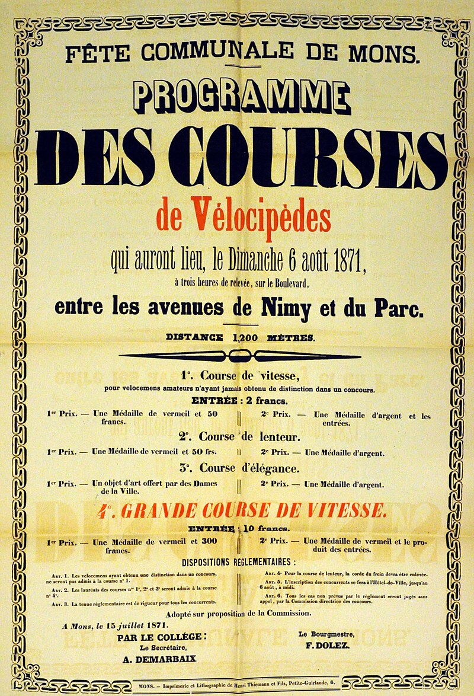
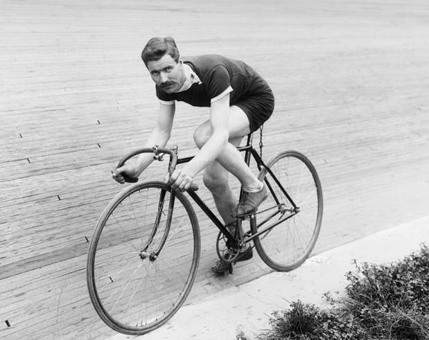
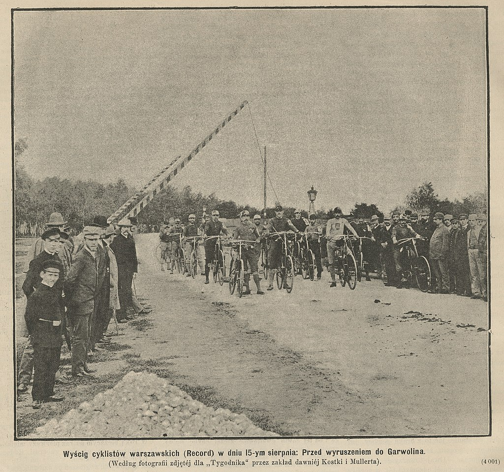
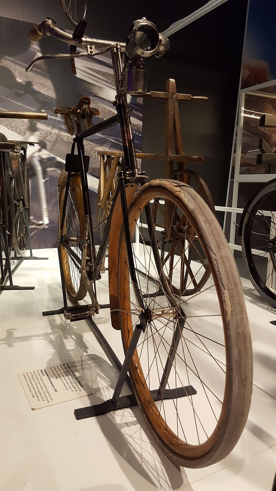
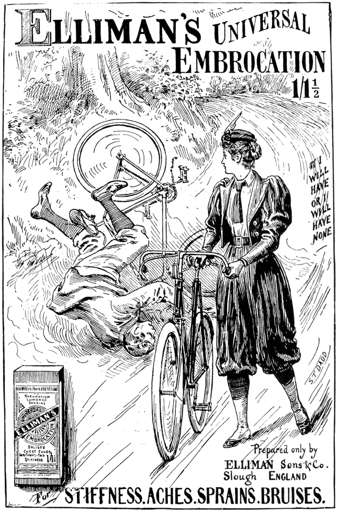
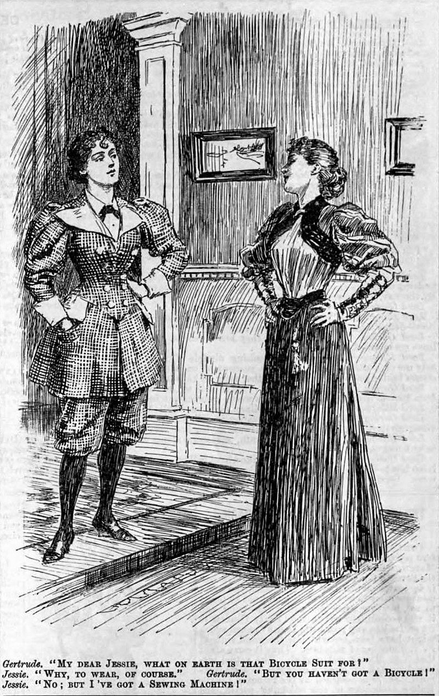

Two Wheels, One Soul
Freedom on every pedal stroke
Freedom on every pedal stroke
| Cycling quickly became an activity after bicycles were introduced in the 19th century and remains popular with more than a billion people worldwide used for recreation, transportation and sport. |
| The first documented cycling race was a 1,200 metre race held on May 31, 1868, at the Park of Saint-Cloud, Paris. It was won by expatriate Englishman James Moore who rode a bicycle with solid rubber tires. The first cycle race covering a distance between two cities was Paris–Rouen, also won by James Moore, who rode the 123 kilometres dividing both cities in 10 hours and 40 minutes. The oldest established bicycle racing club in the United States is the St. Louis Cycling Club. Operating continuously since 1887, the club has sponsored races and timed distance events since its inception. Its members have included numerous national champions and Olympic team members. |
| Cycling as recreation became organized shortly after racing did. In its early days, cycling brought the sexes together in an unchaperoned way, particularly after the 1880s when cycling became more accessible owing to the invention of the Rover Safety bicycle. Public cries of alarm at the prospect of moral chaos arose from this and from the evolution of women’s cycling attire, which grew progressively less enveloping and restrictive. On 4 March 1915 the society for the construction of cycle paths in the Gooi and Eemland region in the Netherlands was founded. It is the last private “Cycle Path Society” that still exists today. Some people thought the increasing amount of motor traffic in the early 20th century was so dangerous for people cycling, especially those who rode as a leisure activity, that they wanted separate cycling infrastructure to be built. The routes would also not be connected to a route for motor traffic and mainly for recreation – so not the shortest routes, but the nicest routes. |
| People have been riding bicycles to work since the initial bicycle heyday of the 1890s. According to the website Bike to Work, this practice continued in the United States until the 1920s, when biking experienced a sharp drop, in part due to the growth of suburbs and increasing usage of the car. In Europe, cycling to work continued to be common until the end of the 1950s. Today many people ride bikes to work for a variety of reasons including fitness, environmental concerns, convenience, frugality, and enjoyment. According to the US Census Bureau’s 2008 American Community Survey(ACS), on September 22, 2009, 0.55 percent of Americans use a bicycle as the primary means of getting to work. Some places of employment offer amenities to bike commuters, such as showers, changing rooms, indoor bike racks and other secure bike parking. |
| Many cyclists wanted to use their machines to travel; some of them went around the world. Annie Londonderry did so in 1894–95, taking 15 months. Six Indian men cycled 71000 km around the world in the 1920s. |
| With four key aspects (steering, safety, comfort and speed) improved over the penny-farthing, bicycles became very popular among elites and the middle classes in Europe and North America in the middle and late 1890s. It was the first bicycle that was suitable for women, and as such became the "freedom machine" (as American feminist Susan B. Anthony called it), giving women "a feeling of freedom and self-reliance". The Svea Velocipede with vertical pedal arrangement and locking hubs was introduced in 1892 by the Swedish engineers Fredrik Ljungström and Birger Ljungström. It attracted attention at the World's Fair and was produced in a few thousand units. Bicycle historians often call this period the "golden age" or "bicycle craze". By the start of the 20th century, cycling had become an important means of transportation, and in the United States an increasingly popular form of recreation. Bicycling clubs for men and women spread across the U.S. and across European countries. Chicago immigrant Adolph Schoeninger with his Western Wheel Works became the "Ford of the Bicycle" (ten years before Henry Ford) by copying Pope's mass production methods and by introducing stamping to the production process in place of machining, significantly reducing production costs, and thus prices. His "Crescent" bicycles thus became affordable for working people, and massive exports from the United States lowered prices in Europe. The Panic of 1893 wiped out many American manufacturers who had not followed the lead of Pope and Schoeninger, in the same way that the Great Depression would ruin car makers who did not follow Ford. |
| The impact of the bicycle on female emancipation should not be underestimated. The safety bicycle gave women unprecedented mobility, contributing to their larger participation in the lives of Western nations. As bicycles became safer and cheaper, more women had access to the personal freedom they embodied, and so the bicycle came to symbolise the New Woman of the late nineteenth century, especially in Britain and the United States. Feminists and suffragists recognised its transformative power. Susan B. Anthony said, "Let me tell you what I think of bicycling. I think it has done more to emancipate women than anything else in the world. It gives women a feeling of freedom and self-reliance. I stand and rejoice every time I see a woman ride by on a wheel...the picture of free, untrammeled womanhood." In 1895 Frances Willard, the tightly laced president of the Women’s Christian Temperance Union, wrote a book called How I Learned to Ride the Bicycle (described in Bicycling magazine as "the greatest book ever written on learning to ride"), in which she praised the bicycle she learned to ride late in life, and which she named "Gladys", for its "gladdening effect" on her health and political optimism. Willard used a cycling metaphor to urge other suffragists to action, proclaiming, "I would not waste my life in friction when it could be turned into momentum." Elizabeth Robins Pennell started cycling in the 1870s in Philadelphia, and from the 1880s onwards brought out a series of travelogues about her cycling journeys around Europe, from A Canterbury Pilgrimage to Over the Alps on a Bicycle. In 1895 Annie Londonderry became the first woman to bicycle around the world. The backlash against the New (bicycling) Woman was demonstrated when the male undergraduates of Cambridge University in England chose to show their opposition to the admission of women as full members of the university by hanging a woman in effigy in the main town square—tellingly, a woman on a bicycle—as late as 1897. Since women could not cycle in the then-current fashions for voluminous and restrictive dress, the bicycle craze fed into a movement for so-called rational dress, which helped liberate women from corsets and ankle-length skirts and other encumbering garments, substituting the then-shocking bloomers. |
| Image | Description |
|---|---|
|  | Program of cycling races, August 1871, Mons, Belgium. |
|  | Bicycle Racer posed at Salt Palace wood track, Salt Lake City, 1911 |
|  | Bicycle racers before start of the Warsaw – Garwolin bicycle race in 1891 |
|  | The Svea Velocipede by Fredrik Ljungström and Birger Ljungström, exhibited at the Swedish National Museum of Science and Technology |
|  | 1897 ad, showing unskirted garment for women's bicycle riding |
|  | Bicycle suit vs conventional clothing |